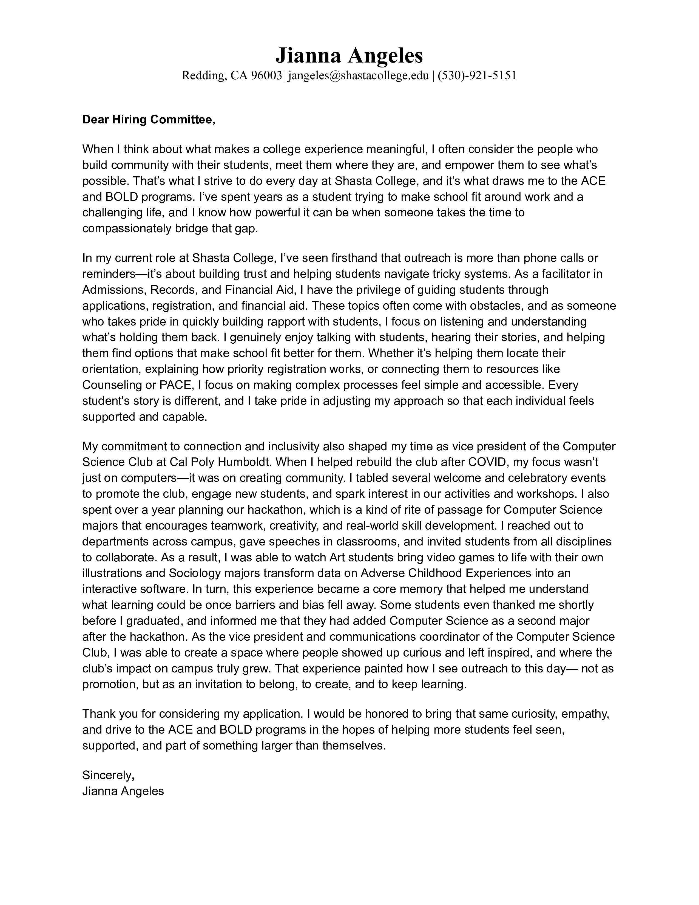
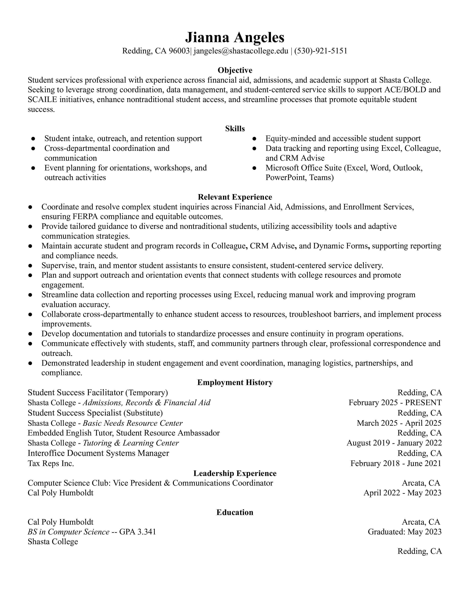

Documents
Cover Letter
Resume
Letter of Recommendation — Cindy Silva

Letter of Recommendation — Joczlynn Nerdin

Student Services • Outreach • Coordination • Equity & Access
Hello! I’m Jianna Angeles, and Shasta College has been a part of my life for over a decade. I’ve been a student, lived in the dorms, tutored in the TLC, and now, I get to empower students as a Student Success Facilitator in Admissions & Financial Aid. Those experiences shaped how I understand education, community, and what students actually need to feel supported.
After graduating from Shasta College, I transferred to Cal Poly Humboldt and earned my bachelor’s in Computer Science. This degree taught me how to ask the right questions, investigate problems, and improve existing systems and procedures. I’ve found that those same skills apply directly to helping students— such as helping students understand their accounts, learning their options, and guiding them through something new with empathy and compassion.
I’ve always enjoyed challenging myself through hard work, but I’ve learned that I enjoy my job when I know it’s making the world better —at least a little. I know what it feels like to be overwhelmed, unsure, or to feel that education is out of reach. If it weren’t for Shasta College, I know I wouldn’t have made it as far as I have. Today, I hope to take up the torch and support students to achieve any goal they’ve set for themselves.
My background in technology, higher education, and years of being a part of Shasta College’s community gives me a unique perspective. I feel confident I can tackle any challenge with grace and be an empathetic presence that students will be confident coming back to for help.